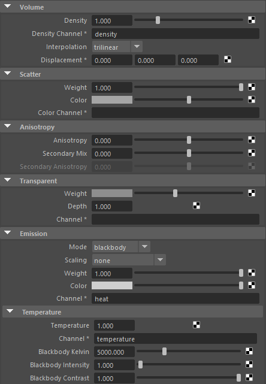
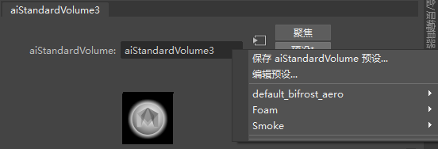

使用体积着色器，可以对字段值进行采样并映射到颜色和不透明度，从而可视化 3D 标量数据字段（例如，“密度”(Density)字段）。您可以将体积着色器指定给体积形状（例如，Arnold 体积对象）。
有关体积工作流的详细信息，请参见体积页面。
建议尽量使体积着色网络保持精简。在体积上下文中，这对于渲染时间至关重要，因为其求值频率非常高。

standard_volume 是基于物理的体积着色器。它对体积密度、散射颜色和透明颜色提供独立控制。
可以在 standard_volume 的属性编辑器中使用旧版 Bifrost 预设。
